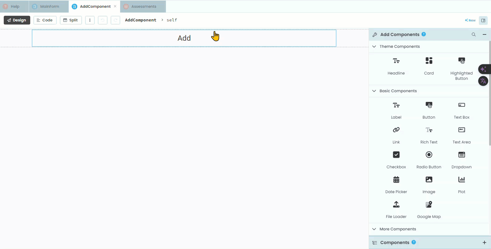
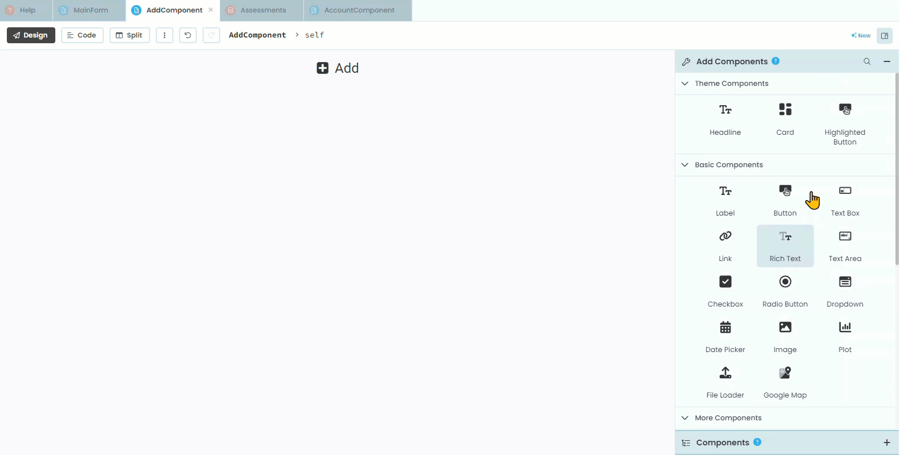
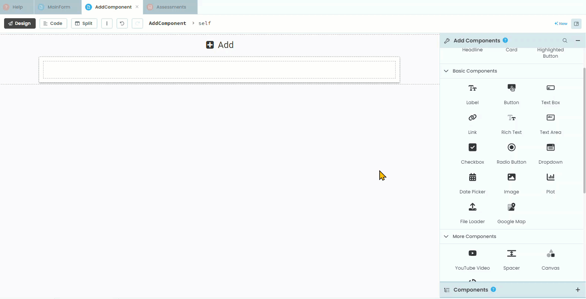
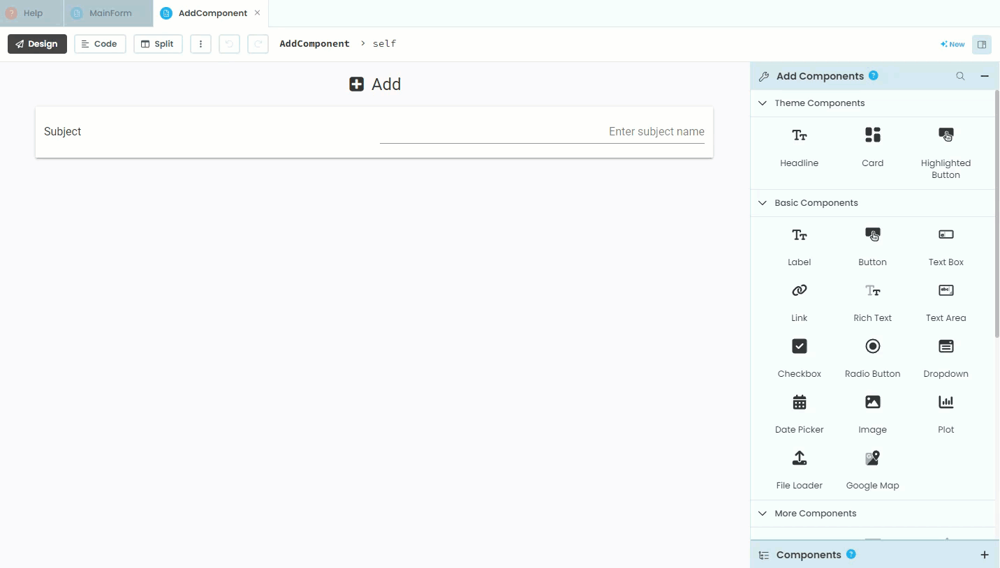
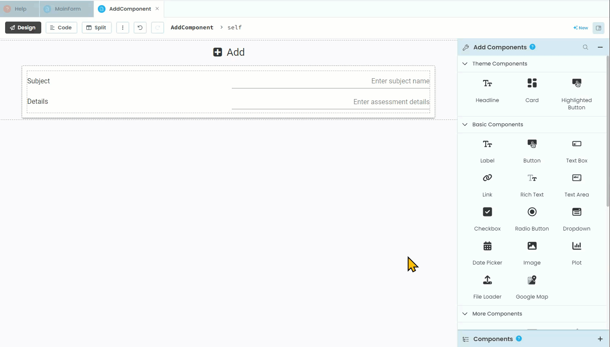
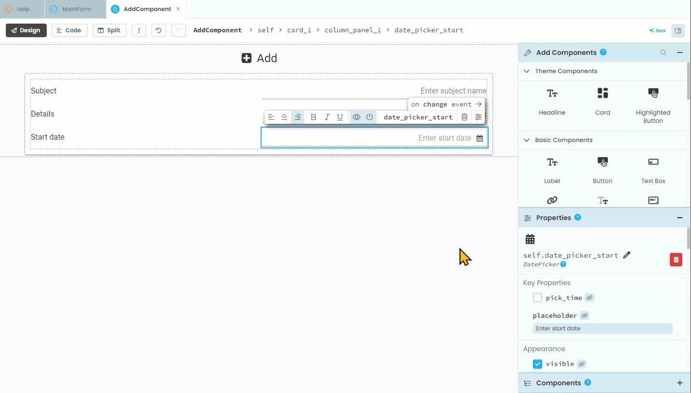
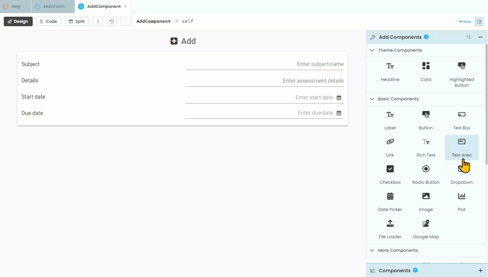
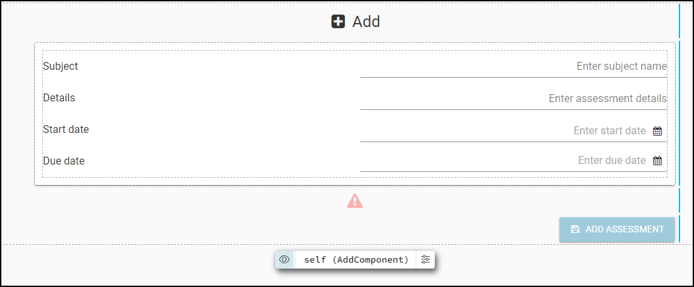

AddComponent Design¶
Now that we have somewhere to store assessment data, we need a way to input it. This will be completed through the AddComponent.
Design¶
Checking our design we will see the layout of this component.

The layout¶
Open the AddComponent in the design mode.
Title¶
Currently the only element on the component is the title. We’ll start by adding an icon to the title.
Click on the title
Find Icon in the Properties panel
Choose the
fa:plus-square

Organisational elements¶
Looking at our design we can see that we will need a Card that contains a Column Panel so add these to your layout.

Labels and text boxes¶
Now we need to add the labels and text boxes.
First add the subject elements
Add a label
Change the text to
SubjectCharge its role to
input-promptAdd a text box
Change the text box’s name to
text_box_subjectChange the text box’s placeholder to
Enter subject nameChange the text box’s align to
right

Then add the details elements
Add a label
Change the text to
DetailsCharge its role to
input-promptAdd a text box
Change the text box’s name to
text_box_detailsChange the text box’s placeholder to
Enter assessment detailsChange the text box’s align to right

Dates¶
We now need to add the two date fields, Start date and Due date. Anvil uses Python’s datetime module to handle dates. This means that dates are stores as a Python object, with the day, month and year all stored as separate values (it does the same for time). This way you can use each of the values independently, which includes choose how to format the date. In our website, we will display our dates in the format of dd/mm/yyyy so that the 1st of April 2024 would be displayed as 01/04/2024.
Date formats
Date formats can be problematic because different regions use different conventions. The most common format is “DD/MM/YYYY”, but it is far from dominate. The US uses “MM/DD/YYYY” , while Japan, South Korea, China and others use “YYYY/MM/DD”. This can lead to confusion and errors when processing dates from various sources. Additionally, dates can be represented in many ways, such as strings, timestamps, or specific date objects, requiring careful handling to ensure accuracy.
Anvil simplifies working with dates by using Python’s datetime module, which provides a standard way to create, manipulate, and format dates. Anvil’s date pickers and forms automatically handle date input in a consistent format. When dates are stored in Anvil’s database, they are stored as datetime objects, ensuring that date operations are performed correctly and consistently, regardless of the user’s regional settings. Anvil also provides utilities to format dates for display and to parse dates from strings, making it easier to handle different date formats accurately.
For more information check out Geeks for Geeks datetime tutorial
First we need to add the start date:
Add a label
Change the text to
Start dateCharge its role to
input-promptAdd a date picker
Change the date picker’s name to
date_picker_startChange the date picker’s placeholder to
Enter start dateChange the date picker’s format to
%d/%m/%YChange the date picker’s align to right

Then we need to add the due date:
Add a label
Change the text to
Due dateCharge its role to
input-promptAdd a date picker
Change the date picker’s name to
date_picker_dueChange the date picker’s placeholder to
Enter due dateChange the date picker’s format to
%d/%m/%YChange the date picker’s align to right

Error message¶
Just like the SetDetailsComponent we will be validating the user’s input, therefore we need an element to display warnings. Previously we have displayed warnings under the card, so we will continue this to maintain consistency.
Add a label
Change the name to
label_errorUntick visibility
Change foreground to
#ff0000Change role to
headlineChange icon to
fa:warningChange align to
center

Testing¶
That is all the elements that the AddComponent needs. Your finished layout should look like:
